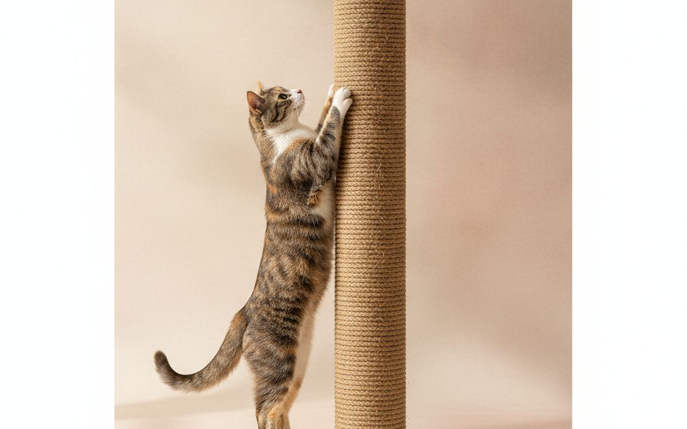
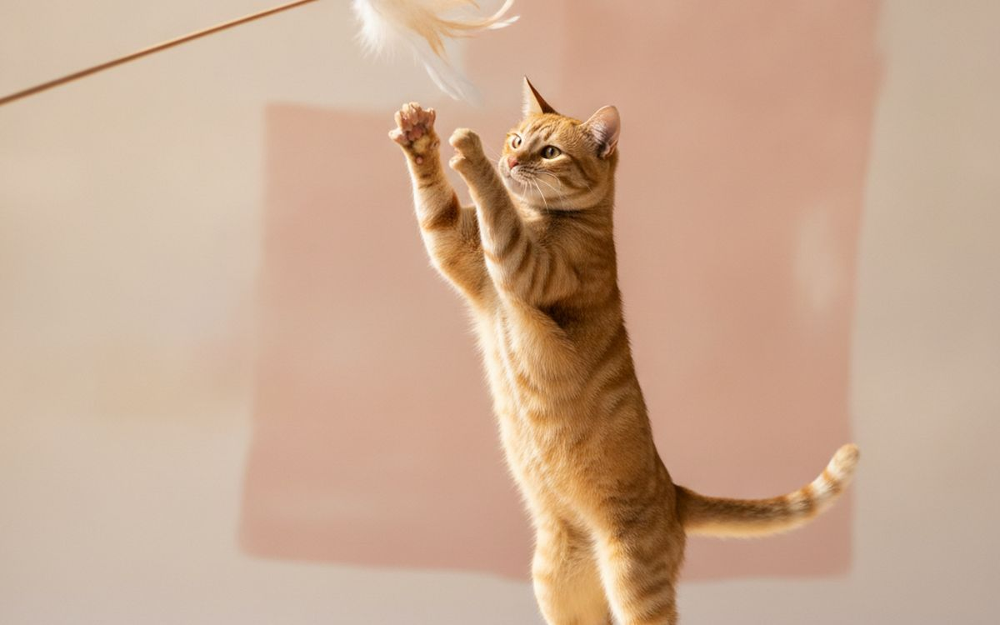
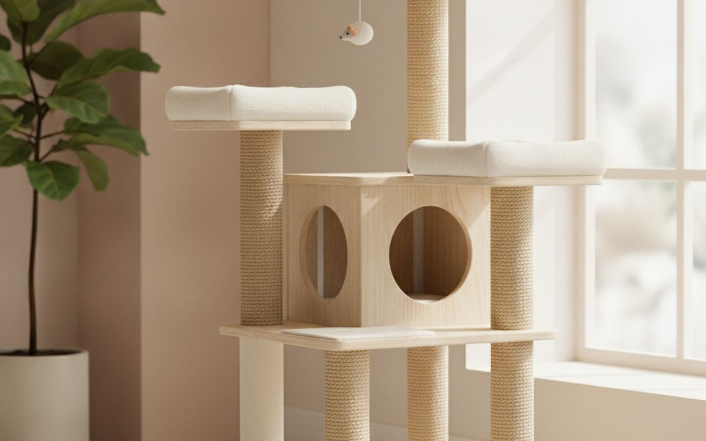
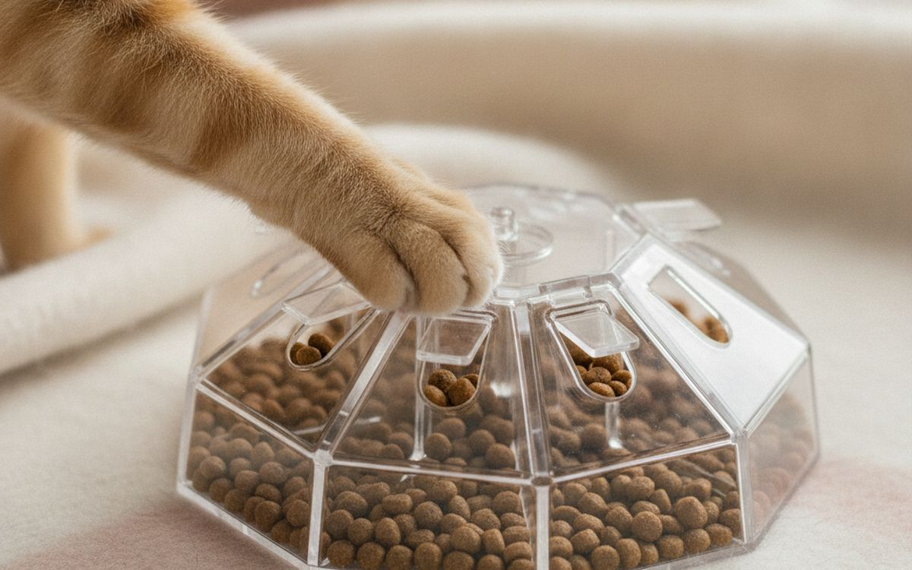
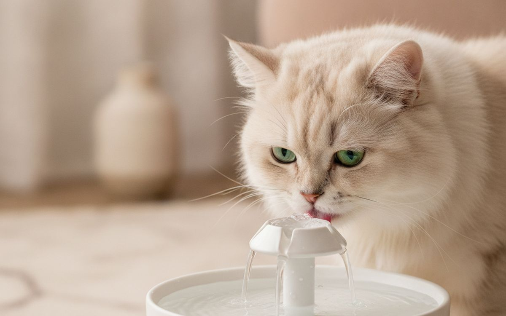
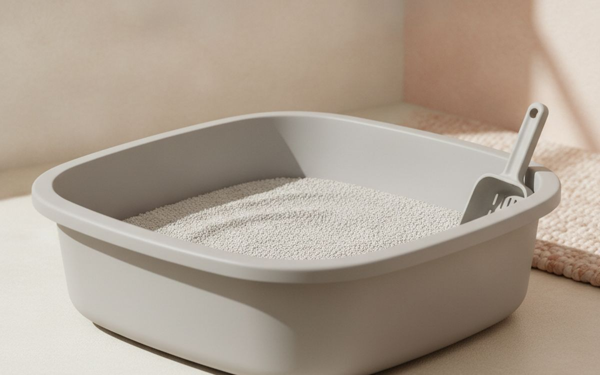
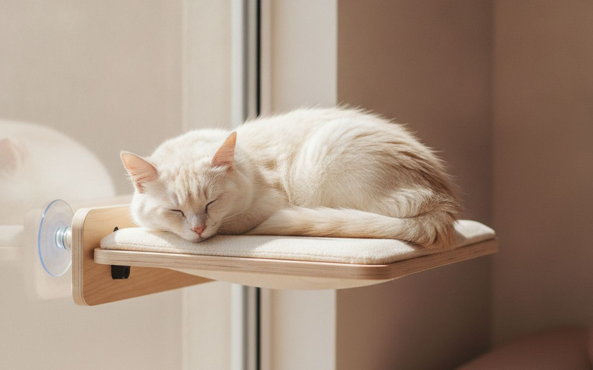
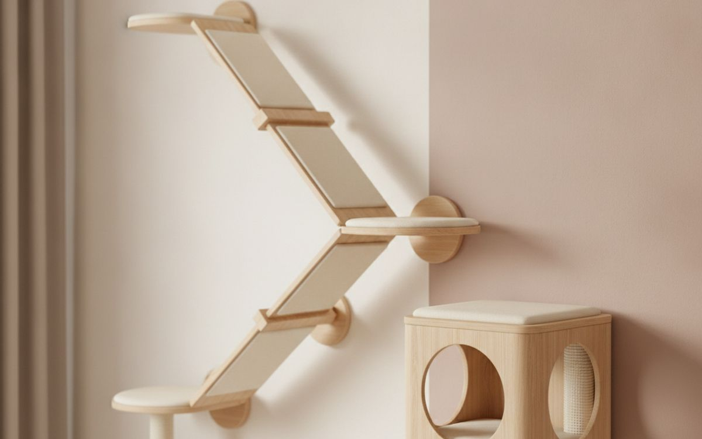
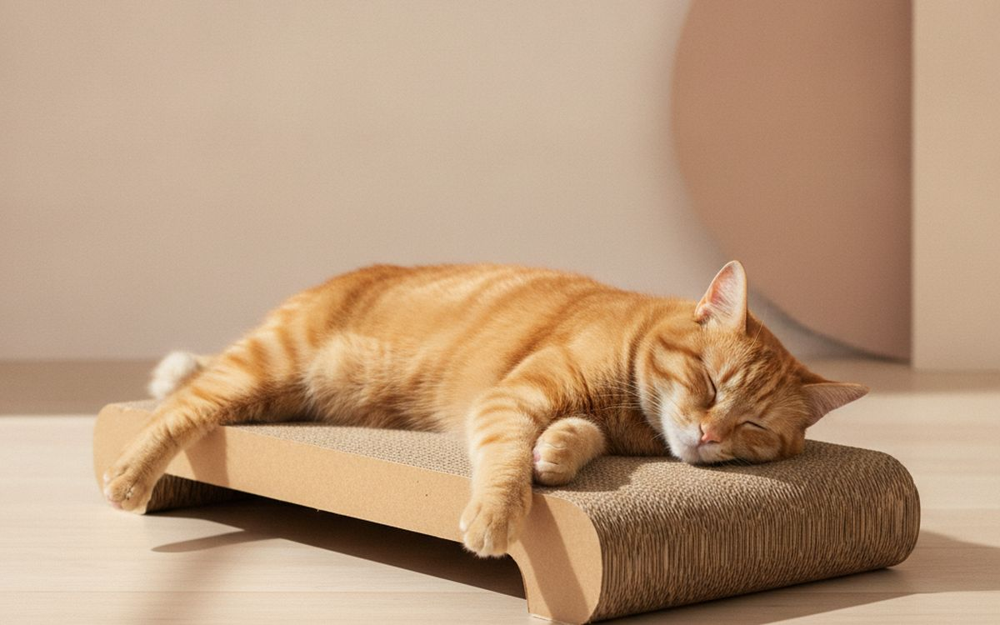
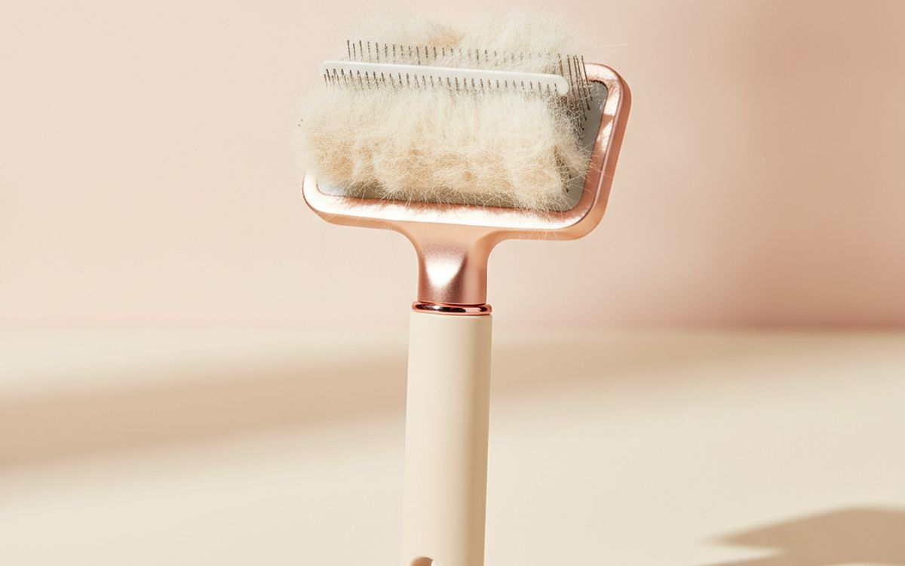

Indoor cats live longer and safer lives than outdoor cats, but many are bored. Boredom shows up as scratched furniture, knocked-over glasses, night-time zoomies, overeating and stress. Most of these behaviours are a cat trying to do cat things in a space that does not let it: climb, scratch, hunt and watch the world.
This list is ordered by how much each item gives an indoor cat those outlets. None of it is expensive, and most of it saves furniture and vet bills.
Prices below are approximate street prices at the time of writing and move around constantly, especially during sale events. Treat them as a rough band for budgeting, not a quote. Always check the live listing before you buy.
The short version
A tall, sturdy scratching post
The piece that saves the sofa
Disclosure. The links on this page are affiliate links. If you buy through one we may earn a commission at no extra cost to you. It does not affect what makes this list or the order it is in.
How we picked
These picks come from veterinary and feline behaviour guidance, cat owner communities and long-run owner reports, cross-checked against current retail listings. We have not personally tested every item here. Sudden behaviour changes can signal a health problem, so talk to your vet if your cat's habits change.
At a glance
Prices are approximate at the time of writing and change often.
The picks

01 · The piece that saves the sofaA tall, sturdy scratching post
Cats scratch to keep claws healthy, stretch and mark territory. Most posts sold are too short and wobbly, so cats ignore them and use the sofa. A good post is tall enough for a full stretch, about 30 inches or more, covered in sisal rope and heavy enough not to tip. Place it next to the furniture your cat likes to scratch, and reward them when they use it. The case for it: saves furniture, healthy claws and stretching, and cats actually use tall, stable posts. The trade-off is real: takes floor space and short, wobbly posts get ignored, so weigh that against how often it would actually get used.
$30-70Trade-off: Takes floor space
Why it is here
- Saves furniture
- Healthy claws and stretching
- Cats actually use tall, stable posts
Worth knowing
- Takes floor space
- Short, wobbly posts get ignored

02 · Daily play that tires them outA wand toy
Nothing tires out a cat like a feather or fabric wand toy moved like prey. Ten to fifteen minutes of play twice a day reduces night-time activity, helps weight and builds your bond. End each session with a treat, which mimics a successful hunt. Put it away after, so it stays exciting and no one swallows the string. The case for it: burns energy, helps weight control, and builds your bond. The trade-off is real: strings are unsafe unattended and feathers wear out; buy refills, so weigh that against how often it would actually get used.
$8-15Trade-off: Strings are unsafe unattended
Why it is here
- Burns energy
- Helps weight control
- Builds your bond
Worth knowing
- Strings are unsafe unattended
- Feathers wear out; buy refills

03 · Climbing and watchingA cat tree near a window
Cats feel safe up high, and a cat tree gives them climbing, lookout spots and a place to nap. Near a window, it becomes their favourite spot. Choose a stable tree with a wide base, sisal posts and platforms large enough for your cat. Cheap trees wobble, which cats hate. The case for it: climbing and height, lookout and nap spots, and scratching built in. The trade-off is real: large and hard to hide and cheap trees wobble, so weigh that against how often it would actually get used. Priced around $60-150, it is easy to justify even if it only ends up getting occasional rather than daily use.
$60-150Trade-off: Large and hard to hide
Why it is here
- Climbing and height
- Lookout and nap spots
- Scratching built in
Worth knowing
- Large and hard to hide
- Cheap trees wobble

04 · Slower eating and huntingA food puzzle or treat ball
Cats in the wild work for every meal. Food from a bowl is eaten in seconds. Puzzle feeders and treat balls make them hunt for kibble, which slows eating, reduces vomiting and gives mental exercise. Start with an easy one and make it harder over time. The case for it: slows fast eating, mental stimulation, and helps weight control. The trade-off is real: some cats lose interest and harder to use with wet food, so weigh that against how often it would actually get used. At $10-25, it earns its place on this list without asking for a big up-front commitment either way.
$10-25Trade-off: Some cats lose interest
Why it is here
- Slows fast eating
- Mental stimulation
- Helps weight control
Worth knowing
- Some cats lose interest
- Harder to use with wet food

05 · Drinking more waterA water fountain
Many cats do not drink enough, which is linked to urinary and kidney problems. Moving water attracts many cats, and fountains keep water fresh and filtered. Clean it weekly and change filters regularly. Place it away from the food bowl; cats prefer water away from food. The case for it: encourages drinking, fresh, filtered water, and quiet models available. The trade-off is real: needs regular cleaning and filters are an ongoing cost, so weigh that against how often it would actually get used. For $25-45, it is a small, low-risk addition to the list rather than a centrepiece purchase you need to think hard about.
$25-45Trade-off: Needs regular cleaning
Why it is here
- Encourages drinking
- Fresh, filtered water
- Quiet models available
Worth knowing
- Needs regular cleaning
- Filters are an ongoing cost

06 · Fewer litter problemsA large, uncovered litter box
Most litter boxes are too small. Cats prefer a box about one and a half times their body length, uncovered, with unscented clumping litter, in a quiet spot. Many litter problems disappear with a bigger box and daily scooping. The usual advice is one box per cat plus one. The case for it: fewer accidents, cats prefer them, and easy to clean. The trade-off is real: uncovered boxes show litter and takes more space, so weigh that against how often it would actually get used. Priced around $20-45, it is easy to justify even if it only ends up getting occasional rather than daily use.
$20-45Trade-off: Uncovered boxes show litter
Why it is here
- Fewer accidents
- Cats prefer them
- Easy to clean
Worth knowing
- Uncovered boxes show litter
- Takes more space

07 · Bird watchingA window perch
A window perch gives your cat a front-row seat to birds and passers-by, which cat owners sometimes call cat TV. Suction or screw-mounted perches hold most cats. Put a bird feeder outside the window for extra entertainment. The case for it: hours of entertainment, uses unused window space, and cheap. The trade-off is real: suction cups can fail and check weight limits, so weigh that against how often it would actually get used. At $20-40, it earns its place on this list without asking for a big up-front commitment either way. As with anything on this list, check the exact listing details and current price before adding it to a cart.
$20-40Trade-off: Suction cups can fail
Why it is here
- Hours of entertainment
- Uses unused window space
- Cheap
Worth knowing
- Suction cups can fail
- Check weight limits

08 · Vertical space in small homesWall shelves for cats
In small apartments, the walls are where the space is. A set of cat shelves and steps creates a climbing route and gives the cat its own territory, which can reduce tension in multi-cat homes. They need secure mounting into studs. The case for it: adds space without floor space, reduces multi-cat tension, and looks good. The trade-off is real: needs secure wall mounting and renters should check lease rules, so weigh that against how often it would actually get used. For $40-100, it is a small, low-risk addition to the list rather than a centrepiece purchase you need to think hard about.
$40-100Trade-off: Needs secure wall mounting
Why it is here
- Adds space without floor space
- Reduces multi-cat tension
- Looks good
Worth knowing
- Needs secure wall mounting
- Renters should check lease rules

09 · Cheap scratching everywhereCardboard scratchers
Some cats prefer to scratch horizontally. Flat cardboard scratchers are cheap, and cats love them. Place several around the home, especially near doors and sleeping spots. Replace when worn. The case for it: cheap, suits cats that scratch horizontally, and cats often nap on them. The trade-off is real: shed cardboard bits and wear out in months, so weigh that against how often it would actually get used. Priced around $10-20, it is easy to justify even if it only ends up getting occasional rather than daily use. None of that makes it essential for everyone reading this, only worth knowing about if the description above matches how you actually use the space.
$10-20Trade-off: Shed cardboard bits
Why it is here
- Cheap
- Suits cats that scratch horizontally
- Cats often nap on them
Worth knowing
- Shed cardboard bits
- Wear out in months

10 · Hairballs and sheddingA self-cleaning grooming brush
Regular brushing reduces hairballs, shedding and matting, especially for long-haired cats. A brush with a button that pushes the hair off makes cleaning easy. Brush a few minutes a few times a week; many cats learn to enjoy it. The case for it: fewer hairballs, less hair on furniture, and easy to clean. The trade-off is real: some cats dislike brushing and too much pressure can scratch skin, so weigh that against how often it would actually get used. At $10-20, it earns its place on this list without asking for a big up-front commitment either way.
$10-20Trade-off: Some cats dislike brushing
Why it is here
- Fewer hairballs
- Less hair on furniture
- Easy to clean
Worth knowing
- Some cats dislike brushing
- Too much pressure can scratch skin
Common questions
How do I stop my cat scratching the sofa?
Put a tall, stable sisal post next to it, reward use and make the sofa less attractive with covers or tape for a while.
How much play does an indoor cat need?
About 10-15 minutes of active play twice a day for most cats.
Do cats need water fountains?
Not always, but many drink more from them, which helps urinary health.
How many litter boxes do I need?
One per cat, plus one, in quiet spots.
Today's deals
See what is discounted right now.
Deals →← All guides
As an AliExpress affiliate we earn from qualifying purchases. Prices and availability are accurate as of the date of publication and may change.